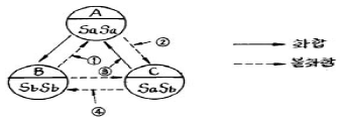

종자기사 (2005-05-29 기출문제)
1과목: 종자생산학
1. 크고 충실하여 발아·생육이 좋은 종자를 가려내는 선종(選種)의 방법이 아닌 것은?
- 저장방법에 의한 선별
- 중량에 의한 선별
- 비중에 의한 선별
- 용적에 의한 선별
(정답률: 72%)

2. 2004년까지 개발된 유전자 변형신작물(GMO)의 특성 중 세계적으로 가장 많은 비중을 차지하는 것은?
- 품질향상
- 제초제 저항성
- 해충 저항성
- 수량증대
(정답률: 77%)
3. 종자저장을 위해 사용되는 건조제로 적당하지 않은 것은?
- 이산화황
- 황산
- 질산
- 생석회
(정답률: 알수없음)
4. 지베렐린산(GA3; 분자량 346.37) 10-3mol을 조제하고자 할 때 증류수 1L에 몇 mg의 지베렐린산을 녹이면 되는가?
- 3.4637mg
- 34.637mg
- 346.37mg
- 3.4637g
(정답률: 84%)
5. 화곡류에서 질소의 과다시용에 의한 피해가 아닌 것은?
- 잎에 병을 유발한다.
- 종자의 휴면성을 증가시킨다.
- 과도한 영양생장과 도복의 원인이 된다.
- 종자의 등숙율을 저하시킨다.
(정답률: 86%)
6. 다음 중 무배유종자인 것은?
- 보리
- 팥
- 옥수수
- 메밀
(정답률: 62%)
7. 종자퇴화가 진전되면서 일어나는 증상을 잘못 설명한 것은?
- 효소의 활력저하
- 호흡량의 저하
- 침출액의 저하
- 유리지방산의 증가
(정답률: 알수없음)
8. 순도검사에서 이물(異物)의 범주에 속하는 것은?
- 손상받지 않은 종자
- 반절이하 크기의 종자
- 쭈글어진 종자
- 미숙립
(정답률: 54%)
9. 다른 화분의 혼입이 없도록 충분한 격리거리가 확보된 채종지를 필요로 하는 작물은?
- 무
- 상추
- 완두
- 강낭콩
(정답률: 64%)
10. 안전저장을 위한 최고 종자수분함량이 가장 알맞게 짝지어진 것은?
- 보리 - 13.0%
- 콩 - 13.0%
- 벼 - 14.0%
- 밀 - 10.0%
(정답률: 40%)
11. 종자검사를 위한 표본추출의 원칙으로 가장 적당한 것은?
- 표본은 전체 종자를 대표해야 한다.
- 표본은 전체보다 약간 양호한 부위에서 추출한다.
- 표본은 전체보다 약간 불량한 부위에서 추출한다.
- 접근이 용이한 부위를 중심으로 임의로 채취한다.
(정답률: 100%)
12. 발아 중인 종자에서 단백질은 가수분해하여 어떠한 가용성 물질로 변화하는가?
- 지방산
- 맥아당
- 아미노산
- 만노스
(정답률: 100%)
13. 종자 발아능 검사의 한가지 방법인 테트라죨륨검사(TTC)시 관여하는 주 효소는?
- dehydrogenase
- catalase
- peroxidase
- amylase
(정답률: 43%)
14. 다음 중 저장 수명이 가장 짧은 종자는?
- 양파
- 배추
- 수박
- 토마토
(정답률: 90%)
15. 적색광(670nm) 조건에서 종자의 발아가 촉진되는 작물로 짝지어진 것은?
- 담배, 상추, 뽕나무
- 담배, 가지, 오이
- 담배, 상추, 양파
- 담배, 가지, 뽕나무
(정답률: 59%)
16. 종자 발아검사 시 반복간 발아율의 차이가 최대허용오차를 벗어나면 다시 실험을 해야한다. 이 때 최대허용오차 범위로 가장 적당한 것은?
- 평균발아율이 높을수록 허용오차가 커진다.
- 평균발아율이 낮을수록 허용오차는 커진다.
- 평균발아율이 중간일 때 허용오차는 가장 크다.
- 평균발아율과 관계없이 허용오차는 일정하다.
(정답률: 알수없음)
17. 뇌수분을 실시하는 주된 목적은?
- 교배작업의 생력화 수단
- 자가불화합성 채소의 모본유지·증식 수단
- 배추과 채소의 일대잡종 종자 생산수단
- 웅성불임현상 타파수단
(정답률: 91%)
18. 다음 중에서 단위결과가 안되는 작물은?
- 감
- 사과
- 포도
- 귤
(정답률: 70%)
19. 보리에서 수분(受粉)후 8개의 배젖(배유)핵이 형성되는 시기는?
- 수분 5시간 후
- 수분 10시간 후
- 수분 13시간 후
- 수분 15시간 후
(정답률: 20%)
20. 양파를 장해물이 없는 상태에서 채종하고자 할 때 격리 거리는?
- 200m
- 300m
- 500m
- 1,000m
(정답률: 알수없음)
2과목: 식물육종학
21. 과수류와 같은 영양계 번식식물을 개량할 경우에 관한 설명으로 가장 적당한 것은?
- 우수성, 영속성, 균일성을 검정하여야 한다.
- 우수한 개체만 만들어지면 된다.
- 균일성을 반드시 검정하여야 한다.
- 영속성만 검정하면 된다.
(정답률: 알수없음)
22. 서로 다른 계통 또는 식물간의 교배를 위하여 개화기를 조절하는 방법이 아닌 것은?
- 파종기를 조절한다.
- 춘화처리를 한다.
- 우량품종을 교배묘본으로 한다.
- 일장 처리를 한다.
(정답률: 74%)
23. 두 유전자가 연관되었는지를 알아보기 위하여 주로 쓰는 방법은?
- 타가수정
- 원형질융합
- 속간교배
- 검정교배
(정답률: 90%)
24. 1대 잡종 품종이 재배되고 있는 배추, 고추, 수박, 옥수수 등의 농작물은 종자갱신을 몇 년에 한번씩 하는 셈인가 ?
- 1년
- 2년
- 3년
- 4년
(정답률: 알수없음)
25. 순계에 대한 설명으로 옳지 않은 것은?
- 재래 개체군에는 많은 순계가 혼합되어 있다.
- 자가수정작물의 동형접합체에서 생산된 자손들이다.
- 선발의 효과가 없다.
- 타가수정작물은 순계를 이용할 수가 없다.
(정답률: 73%)
26. 방사선 돌연변이 육종에 있어서 방사선의 적정강도를 결정하는데 치사율을 고려한다. 가장 적정한 치사율은?
- 5%
- 25%
- 50%
- 75%
(정답률: 알수없음)
27. 다음 어느 경우 선발의 효과가 가장 크게 기대되는가?
- 유전변이가 작고, 환경변이가 클 때
- 유전변이가 크고, 환경변이가 작을 때
- 유전변이가 크고, 환경변이도 클 때
- 유전변이가 작고, 환경변이도 작을때
(정답률: 92%)
28. 종속이 다른 작물간 교배에 의하여 새로운 작물을 육성해 내는데 사용될 수 있는 가장 적절한 방법은?
- 생장점 배양
- 배 배양
- 단위생식 야기법
- 웅성불임 야기법
(정답률: 60%)
29. 다음 중 대립유전자 변이의 근본원인이 되는 것은?
- 지리적 격리
- 생산성 향상
- 돌연변이
- 자가수정
(정답률: 알수없음)
30. 포장조건에서 생산력 검정을 할 때 생기는 오차를 줄이기 위하여 해야 할 일은?
- 다비재배
- 조합능력검정
- 통계적 방법에 의한 실험설계
- 유전자 분석
(정답률: 알수없음)
31. 우수형질을 가진 아조변이가 나타났을 때 신품종으로 이용할 수 있는 것은 ?
- 양파, 파
- 배추, 무우
- 토마토, 가지
- 사과, 밀감
(정답률: 54%)
32. 대응이 있는 2개의 관측값의 평균(또는 합계)에 대한 통계적 유의차(有意差)의 유무를 알기 위해서는 다음 중 어느 것을 택하는 것이 좋은가?
- X2 검정
- t 검정
- F 검정
- LSD 검정
(정답률: 알수없음)
33. 음 그림은 배추과채소의가 및 교잡불화합의 유전양식이다. 잘못 표시된 것은?(단, ♀는 Sa:Sb, ♂는 Sa ＜ Sb 이다.)

- ①
- ②
- ③
- ④
(정답률: 50%)
34. 다음 중 우장춘 박사의 작물육종 업적에 속하는 것은?
- 유채와 양배추간의 종간잡종 획득
- 속간 잡종을 이용한 담배의 내병성 품종 육성
- 콜히친에 의한 C-mitosis 발생 기작 규명
- 방사선을 이용한 옥수수의 돌연변이체 획득
(정답률: 64%)
35. 감수분열에 관한 사항 중 틀린 것은?
- 상동염색체끼리 대합한다.
- 접합기의 염색체수는 반수이다.
- 화분모세포의 염색체수는 반수이다.
- 4분자의 낭세포의 염색체수는 반수이다.
(정답률: 알수없음)
36. 시판되고 있는 배추과 작물의 잡종종자는 주로 어떤 종자인가?
- 말기 수분으로 자식한 종자이다.
- 몽오리 수분으로 자식한 종자이다.
- 자가 불화합성을 이용하여 자연채종한 것이다.
- 자가 불화합성을 이용하여 인공교배한 것이다.
(정답률: 20%)
37. 농작물 유전적 취약성의 원인이 되는 것은?
- 재배품종의 유전적 배경이 단순화되었기 때문
- 재배품종의 유전적 배경이 다양화되었기 때문
- 농약사용이 많아지기 때문
- 잡종강세를 이용한 F1 품종이 많아졌기 때문
(정답률: 82%)
38. 다음 중 가장 임성(稔性)이 양호한 것은?
- 반수체
- 2배체
- 3배체
- 이수체
(정답률: 알수없음)
39. 잡종강세이용 육종법에서 조합능력의 종류에는 어떤 것들이 있는가?
- 톱교배 조합능력, 일반조합능력
- 일반조합능력, 특정조합능력
- 특정조합능력, 단교배 조합능력
- 단교배 조합능력, 복교배 조합능력
(정답률: 알수없음)
40. 다음 잡종강세를 이용한 F1 품종들의 장점으로 가장 거리가 먼 것은?
- 증수효과가 크다.
- 품질이 균일하다.
- 내병충성이 양친보다 강하다.
- 종자의 대량 생산이 용이하다.
(정답률: 알수없음)
3과목: 재배원론
41. 방사선 동위원소 중에서 인위적 돌연변이 효과가 가장 큰 것은?
- α 선
- β 선
- r 선
- δ 선
(정답률: 59%)
42. 배추과 작물의 성숙 과정이 가장 옳은 것은?
- 유숙 - 호숙 - 황숙 - 완숙
- 백숙 - 녹숙 - 갈숙 - 고숙
- 유숙 - 황숙 - 갈숙- 완숙
- 백숙 - 황숙 - 완숙 - 고숙
(정답률: 알수없음)
43. 광합성 효과를 높이는데 식물의 수광태세가 양호한 것은?
- 잎이 직립형이다.
- 잎이 무성하다.
- 가지가 많다.
- 엽병의 각도가 크다.
(정답률: 알수없음)
44. 습해(濕害) 발생에 대한 설명 중 가장 적당한 것은?
- 양분의 흡수가 너무 많아진다.
- 수분흡수가 과다하게 일어난다.
- 산화성 유해물질이 많이 발생한다.
- 환원성 철(Fe2+) 및 망간(Mo2+)의 생성이 많아진다.
(정답률: 알수없음)
45. SMS( Soil moisture stress)를 가장 잘 설명한 것은?
- 내·외액의 농도 차에 의해서 삼투를 일으키는 압력
- 삼투에 의해서 세포의 수분이 늘면 세포를 증대시키려는 압력이 생기는데 이 압력을 말함
- 토양의 수분 보류력 및 삼투압을 합친 것
- 삼투압과 막압을 합친 것
(정답률: 알수없음)
46. 다음 중 굴광현상에 가장 유효한 광은?
- 청색광
- 녹색광
- 황색광
- 적색광
(정답률: 73%)
47. 다음 중 내도복성과 관련이 가장 적은 것은?
- 키
- 초형
- 내비성
- 내냉성
(정답률: 알수없음)
48. 수발아(穗發芽)에 대한 설명 중 맞지 않는 것은?
- 우리나라에서는 보리가 밀보다 성숙기가 빠르므로 수발아의 위험이 적다.
- 벼에서 수발아가 문제가 되는 때도 있다.
- 밀에서는 초자질립, 백립종 등이 수발아가 심한 경향이다.
- 맥류에서 출수 후 40일경 종피가 굳어진 후 발아억제제를 살포하면 수발아가 억제된다.
(정답률: 알수없음)
49. 옥수수의 버어널리제이션에 필요한 종자의 흡수량으로 가장 적당한 것은?
- 5%
- 10%
- 15%
- 30%
(정답률: 30%)
50. 다음 중에서 영년생(다년생, 永年生)작물에 속하는 것은?
- 호프
- 상추
- 메밀
- 시금치
(정답률: 알수없음)
51. 작물의 유연관계(類緣關係)를 구명하는데 적당치 않은 것은?
- 후대검정에 의한 방법
- 염색체에 의한 방법
- 교잡에 의한 방법
- 전기영동법에 의한 방법
(정답률: 알수없음)
52. 밭에 중경은 때에 따라 작물에 피해를 준다. 다음 중 피해와 관계되지 않는 것은?
- 중경은 뿌리의 일부를 단근시킨다.
- 중경은 표토의 일부를 풍식시킨다.
- 중경은 토양수분의 증발을 증가시킨다.
- 토양온열을 지표까지 상승을 억제, 동해를 조장한다.
(정답률: 30%)
53. 질소 성분이 가장 많이 들어있는 비료는?
- 황산암모늄
- 요소
- 질산암모늄
- 석회질소
(정답률: 알수없음)
54. 작물의 개화기를 조절하는 조건 중 틀린 것은?
- 일장효과
- 버널리제이션
- 감온성
- T - R율
(정답률: 84%)
55. 토양표면을 여러재료로 피복하는 것을 멀칭이라 하는데 그 장점이 아닌 것은?
- 한해경감
- 생육억제
- 잡초억제
- 토양보호
(정답률: 알수없음)
56. 단위시간당의 토지면적당 식물체의 건물증가율을 의미하는 것은?
- LAD(leaf area duration) × LAR(leaf area ratio)
- LAI(leaf area index) × NAR(net assimilation ratio)
- LAR(leaf area ratio) × LAI(leaf area index)
- NAR(net assimilation ratio) × LAD(leaf areaduration)
(정답률: 50%)
57. 논벼(수도)는 다른 작물에 비해서 계속 무비료재배를 하여도 수량이 급격히 감소하지 않은 이유는?
- 잎의 동화력이 크기 때문이다.
- 뿌리의 활력이 좋기 때문이다.
- 비료의 천연공급량이 많기 때문이다.
- 비료의 흡수력이 크기 때문이다.
(정답률: 70%)
58. 연작 장해에 의하여 일어나는 기지(忌地)현상의 원인이 아닌 것은?
- 토양물리성의 악화
- 유효 미생물의 증가
- 토양비료 성분의 수탈
- 유독물질의 축적
(정답률: 80%)
59. 제방(堤防)의 누수장소를 찾기 위하여 흔히 사용하는 방사선 동위원소는?
- 24Na
- 14C
- 32P
- 60Co
(정답률: 알수없음)
60. 냉해 대책에 대한 기술로 가장 거리가 먼 것은?
- 저항성 품종을 선택하여 재배한다.
- 등숙기 냉해는 출수기와 관계가 크다.
- 수온을 높인다.
- 질소 시용량과는 관계가 적다.
(정답률: 70%)
4과목: 식물보호학
61. 작물보호의 의미를 가장 포괄적으로 잘 설명한 것은?
- 새로이 도입된 종합적 방제를 뜻한다.
- 병해충방제는 신농약으로 예방과 구제하는 것을 뜻한다
- 병해충방제는 환경친화적인 방법으로 보호와 방제하는 것을 뜻한다.
- 작물의 병, 해충, 잡초, 기상 등의 재해로부터 작물을 합리적으로 보호하는 수단을 뜻한다.
(정답률: 92%)
62. 일반적인 곤충에서 마지막 유충기를 지나면 껍질을 벗고 번데기가 되는 기간은?
- 약충기(nymphal stage)
- 난기(egg-period)
- 유충기(Larval period)
- 용화(pupation)
(정답률: 62%)
63. 디페노코나졸 유제(10%)를 1,000배로 희석하여 10a당 8말(160 L)살포하려 할 때 디페노코나졸 유제(10%)의 소요 약량은?
- 16 mL
- 160 mL
- 140 mL
- 144 mL
(정답률: 73%)
64. 다음 중 농약의 보조제에 속하는 것은?
- 접촉제
- 유인제
- 유화제
- 기피제
(정답률: 알수없음)
65. 발아에 관여하는 환경요인 중 광조건에 따른 종류가 다른 것은?
- 광대나물
- 소리쟁이
- 개비름
- 향부자
(정답률: 알수없음)
66. 잡초에 의한 피해가 가장 심한 벼 재배방식은?
- 손 이앙재배
- 기계이앙재배
- 담수직파재배
- 건답직파재배
(정답률: 73%)
67. 다음 중 채소작물을 가해하는 해충으로 가장 적당한 것은?
- 혹명나방
- 박쥐나방
- 긴솜깍지벌레
- 점박이응애
(정답률: 59%)
68. 다음 중 흡즙해를 일으키는 곤충이 아닌 것은?
- 파총채벌레
- 메뚜기
- 끝동매미충
- 진딧물
(정답률: 71%)
69. 식물병을 진단하는 방법 중 생물에 의한 진단법에 속하는 것은?
- 눈에 의한 진단
- 지표식물에 의한 진단
- 해부학적 진단
- 이화학적 진단
(정답률: 알수없음)
70. 살포한 농약이 작물이나 곤충 표면에 잘 적셔지고 퍼지는 성질은?
- 수화성
- 습전성
- 유화성
- 현수성
(정답률: 30%)
71. 다음 중 우리가 먹는 버섯의 분류학적 위치로 가장 적당한 것은?
- 유주자균강
- 자낭균강
- 불완전균강
- 담자균강
(정답률: 50%)
72. 다음 잡초 중에서 밭에 발생하는 일년생 잡초는?
- 쇠뜨기
- 바랭이
- 쑥
- 메꽃
(정답률: 알수없음)
73. 다음 중 피레트린(pyrethrin)의 효력증진제로 사용하는 것은?
- piperonyl butoxide
- sulfoxide
- bentonite
- diatomite
(정답률: 40%)
74. 작물 재배시 잡초의 피해에 관한 설명 중 잘못된 것은?
- 경합의 해
- 상호대립억제작용
- 병해충 매개
- 침식 초래
(정답률: 70%)
75. 다음 중 대표적인 토양전염성 병원균으로 가장 적당한 것은?
- 사과 탄저병균
- 벼 도열병균
- 고추 역병균(돌림병균)
- 대추나무 빗자루병균
(정답률: 80%)
76. 조균류(phycomycetes)곰팡이에 의한 질병이 아닌 것은?
- 포도 노균병
- 옥수수 깨씨무늬병
- 참깨 역병
- 조 군데병
(정답률: 43%)
77. 다음 중 곤충의 소화기관이 아닌 것은?
- 소낭
- 발효실
- 기낭
- 중장
(정답률: 80%)
78. 맥류·겉깜부기 병원균이 기주식물에 침입하여 감염되는 부위는?
- 뿌리
- 줄기
- 잎
- 꽃
(정답률: 알수없음)
79. 끈끈이 점착판이나 띠를 이용하여 해충을 잡거나 이동을 막아 방제하는 방제법은?
- 기계적방제
- 화학적방제
- 경종적방제
- 물리적방제
(정답률: 알수없음)
80. 논에서 제초제를 처리할 때 발생되는 약해 요인과 관련이 가장 적은 것은?
- 토성
- 기상조건
- 시비방법
- 물 관리
(정답률: 알수없음)
5과목: 종자관련법규
81. 종자업등록을 하지 아니하고 종자업을 영위한 자에게 해당되는 벌칙은?
- 1년 이하의 징역 또는 1천만원 이하의 벌금
- 2년 이하의 징역 또는 2천만원 이하의 벌금
- 3년 이하의 징역 또는 3천만원 이하의 벌금
- 4년 이하의 징역 또는 4천만원 이하의 벌금
(정답률: 92%)
82. 보호품종의 종자를 증식, 생산, 조제, 양도, 대여, 수출, 수입 또는 전시하는 행위를 무엇이라 하는가?
- 보증
- 실시
- 판매
- 실행
(정답률: 72%)
83. 국가 품종목록등재의 유효기간 연장신청은 언제까지 하여야 하는가?
- 유효기간 만료 전 1년 이내
- 유효기간 만료 후 1년 이내
- 유효기간 만료 전후 1년 동안
- 언제든지 가능하다.
(정답률: 80%)
84. 종자산업법에서 품종목록등재 및 종자보증 없이도 판매 또는 보급할 수 있도록 예외규정을 두고 있다. 이 예외 규정에 해당하지 않는 것은?
- 생산된 종자 중 대부분을 수출하는 경우
- 증식목적으로 판매한 후 생산된 종자를 판매자가 다시 전량 매입하는 경우
- 시험 또는 연구목적으로 쓰이는 경우
- 종자용 이외 목적으로 사용되는 경우
(정답률: 알수없음)
85. 품종보호를 받을 수 있는 권리를 가진 자가 아닌 것은?
- 품종의 육성자
- 품종보호를 출원한 자
- 품종을 공동으로 육성한자
- 국내에 주소가 없는 외국인
(정답률: 알수없음)
86. 농림부장관이 일정량의 종자시료를 보관해야 하는 종자가 아닌 것은?
- 품종 보호권이 설정 등록된 품종의 종자
- 법령의 규정에 의하여 국가 품종목록에 등재된 품종의 종자
- 종자업자가 수출하고자 하는 종자
- 품종 보호권이 설정 등록된 보호 품종 이외의 종자를 생산 또는 수입하여 판매 하고자 신고된 품종의 종자
(정답률: 28%)
87. 다음 중 종자보증을 구분한 것 중 가장 적당한 것은?
- 정부보증과 개인보증으로 구분한다.
- 국가보증과 회사보증으로 구분한다.
- 정부보증과 회사보증으로 구분한다.
- 국가보증과 자체보증으로 구분한다.
(정답률: 100%)
88. 다음의 품종보호요건에 관한 설명 중 맞지 않는 것은?
- 종전의 주요농작물종자법 제2조의 규정에 의한 우량종자의 품종은 종자산업법에 의거 품종보호대상작물의 속 또는 종으로 정하여진 날부터 1년이내 품종보호 출원할 경우 신규성이 있는 것으로 본다.
- 품종보호출원일 이전까지 일반인에게 알려져 있는 품종과 구별되는 경우에는 구별성을 갖춘 것으로 본다.
- 품종의 본질적인 특성이 충분히 균일한 경우에는 균일성을 갖춘 것으로 본다.
- 품종보호 출원일 이전 국내에서 2년이상 당해종자 또는 그 수확물이 이용을 목적으로 양도되지 아니한 경우에는 신규성을 갖춘 것으로 본다.
(정답률: 82%)
89. 법인 또는 개인의 위반행위에 대하여 행위자 이외에 법인 또는 개인에게도 벌금형을 과하는 양벌조항에 해당되지않는 행위는?
- 타인의 품종명칭을 도용하여 종자를 판매한 경우
- 품종보호권 또는 전용실시권을 침해한 경우
- 품종보호출원중인 품종에 관한 비밀을 누설한 경우
- 영업정지를 받고도 종자업을 계속 영위한 경우
(정답률: 알수없음)
90. 품종보호출원의 공고일로 가장 알맞는 것은?
- 품종보호공보가 발행된 날로부터 5일 후
- 품종보호출원이 공고된 취지를 게재한 품종보호 공보가 발행된 날
- 품종보호출원이 공식적으로 접수된 날
- 품종보호공보가 발행된 날로부터 10일 후
(정답률: 알수없음)
91. 농림부장관이 국가품종목록에 등재된 품종의 종자를 생산하고자 할 때 대행시킬 수 없는 자는?
- 농촌진흥청장
- 종자판매상
- 시·도지사
- 농업협동조합
(정답률: 86%)
92. 종자업을 영위하기 위해서는 종자관리사 1인 이상을 갖추어 등록을 하여야 한다. 다음 중 종자관리사를 두지 않으면 종자업 등록이 불가능한 작물은?
- 화훼
- 사료작물
- 채소류(무, 배추, 양배추)
- 목초작물
(정답률: 67%)
93. 다음 중 수출·수입신고가 면제되는 감자종자의 종자수량으로 가장 적당한 것은?
- 5 kg
- 10 kg
- 25 kg
- 50 kg
(정답률: 알수없음)
94. 다음 품종보호권이 취소되는 경우를 설명한 것 중 해당하지 않는 것은?
- 품종이 균일성이나 안정성을 충족할 수 없는 경우
- 보호품종의 유지의무를 이행하지 아니하는 경우
- 해당 품종의 품종명칭이 심사 후 이미 등록된 경우
- 해당품종의 품종명칭의 등록이 취소된 경우
(정답률: 알수없음)
95. 다음 중 종자보증과 관련하여 고의 또는 중대한 과실로 타인에게 막대한 손해를 가한 종자관리사에 대한 행정처분의 기준으로 맞는 것은?
- 자격정지 3월
- 자격정지 6월
- 자격정지 1년
- 자격취소
(정답률: 50%)
96. 종자산업법에서의 "품종"의 정의로 가장 잘 설명한 것은?
- 식물학상 통용되는 최저분류 단위의 식물군으로서 유전적으로 발현되는 특성 중 한가지 이상의 특성이 다른 식물군과 구별되고 변함없이 증식될 수 있는 것
- 식물학상 통용되는 하위 단위의 식물군으로 유전적으로 발현되는 특성 중 두가지 이상의 특성이 다른 식물군과 구별되고 변함없이 증식될 수 있는 것
- 식물학상 통용되는 최저분류 단위의 식물군으로 유전적으로 발현되는 특성 중 두가지 이상의 특성이 다른 식물군과 구별되고 변함없이 증식될 수 있는 것
- 식물학상 통용되는 상위 단위의 식물군으로 유전적으로 발현되는 특성 중 한가지 이상의 특성이 다른 식물군과 구별되고 변함없이 증식될 수 있는 것
(정답률: 100%)
97. 품종의 출원 심사 및 등록절차를 바르게 나타낸 것은?
- 출원 - 출원공개 - 심사 - 출원공고 - 등록
- 출원 - 출원공고 - 예비심사 - 본심사 - 등록
- 출원 - 등록 - 출원공개 - 심사 - 출원공고
- 출원 - 등록 - 출원공고 - 출원공개 - 심사
(정답률: 70%)
98. 다음 중 종자관리사 등록신청서에 첨부할 서류로 맞는 것은?
- 자격증 사본
- 학력증명서
- 주민등록등본
- 호적초본
(정답률: 91%)
99. 다음 중 수입적응성시험의 대상작물이 아닌 것은?
- 호박
- 유자
- 자두
- 감자
(정답률: 알수없음)
100. 농림부장관은 종자산업법을 위반하여 생산 또는 판매되고 있는 종자에 대하여 취할 수 있는 조치가 아닌 것은?
- 생산중지
- 판매중지
- 수거
- 소각
(정답률: 알수없음)